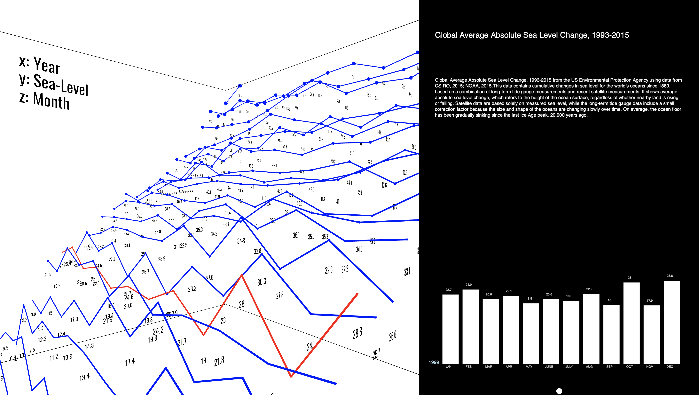

Assessing Suicide Risk in Social Media Posts
HTML
NLP

Classified suicide risk in social media posts versus other mental health conditions (e.g., depression, anxiety) using transformer-based models (MentalBERT, DisorBERT) and the Reddit Mental Health Dataset, integrating pre- and post-COVID data for improved generalizability.
Transit in Beijing
HTML
Tableau visualizations
Analyze transportation behavior within Beijing's 5th Ring Road from 2007 to 2012, using the Geolife dataset from Microsoft Research Asia. Our study explores temporal, spatial, and compositional trends in transportation modes, providing insights for city planners on optimizing infrastructure and addressing travel patterns affected by seasons, holidays, and daily commuting habits.
Predicting Student Drop Out Rates
Machine Learning

Analyze the leading factors contributing to student dropout in higher education by developing and comparing four predictive models: baseline, logistic regression, random forest, and neural network.
Descriptive Regression Analysis
Agnostic Statistics
Answer the following: "What is the relationship between age and BMI, while taking into account other demographic and lifestyle factors?"
GAME OF THRONES NAMED ENTITY RECOGNITION NETWORK
Python
pyvis visualizations
Extract relationships between Game of Thrones Characters found from webScraping the offical wikipedia site. Through graph analyses (centrality measures/community detection) and visualization, via Pyvis, analyze the relationships between characters
CHATGPT API CHATBOT
Python
20 questions with Chatbot, informed by more than 230,000 Reddit posts and comments

An ask-me-anything chatbot using ChatGPT API that answers all your questions about data science, ML, and AI based on subreddit content.
Use 2D Interactive Graphs To Explore Sea Level Rise
JavaScript
Global Sea-Level Rise from 1993-2015

Global Average Absolute Sea Level Change, 1993-2015 from the US Environmental Protection Agency using data from CSIRO, 2015; NOAA, 2015
Dive into the depths of sea level rise data with an immersive 3D interactive Graph
JavaScript
Navigate Year using up/down directional keys
Global Average Absolute Sea Level Change, 1993-2015 from the US Environmental Protection Agency using data from CSIRO, 2015; NOAA, 2015
Working with video data